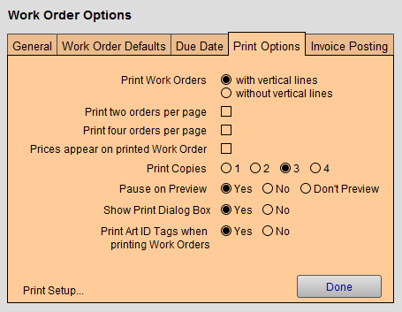

Set up Work Order Print Options
This section will help to set up your printing options for Work Orders.
How to open the Work Order Options
-
On the Main Menu, in the Work Orders section, open the Options tab.
-
Click the More Options... button.
-
Open the Print Options tab.
Work Order Options Print Options tab Explained

Print Work Orders Radio Buttons
-
Choose between two visual styles of printed Work Orders.
-
If you are using an ink jet printer, then it is recommended that you select "without vertical lines" (as this increases printing speed).
Print Two Orders Per Page Checkbox
-
For economy of paper, you can also select to have two different Work Orders printed per page (this option limits the number of components that are printed on the Work Order and should only be used for high volume, basic framing jobs).
Print Four Orders Per Page Checkbox
-
For economy of paper, you can also select to have four different Work Orders printed per page (this option limits the number of components that are printed on the Work Order and should only be used for high volume, basic framing jobs).
Prices appear on printed work order Checkbox
-
When unchecked, FrameReady hides prices on all printed Work Orders.
-
Useful for shop owners who do not wish their employees to see the prices.
Print Copies Radio Buttons
-
You can choose the number of copies you want printed each time you click the Print button in the Work Order file or Print Documents sidebar button > This Customer's Orders.
-
Select from 1 to 4 copies.
-
For 2 or more copies, also set the Show Print Dialog Box to No (because, when the Print Dialog box appears, it uses its own default setting and not the FrameReady setting).
-
For more than 4 copies to be printed, set Print Copies to 1 , set the Show Print Dialog Box to Yes and when you print, you can enter the number of copies when the Print Dialog box appears.
Pause on Preview Radio Buttons
-
Check Yes to display a preview of the document and requires you to click the Continue button in order to present the Print Dialog box. This pause will allow you to also save the document as a PDF by clicking on "Save As PDF..." before it prints.
-
Check No to display a preview of the document, however, it will not pause but will either advance to the Print Dialog box or move directly to printing. This provides a faster option while still allowing you to verify the document before printing.
-
Check Don't Preview and FrameReady will not display a preview of the document. Instead, it will display a blank white area (if you have set the Print Dialog box to display on the screen), or it will simply cause the screen to flash briefly as it sends the document to the printer.
Show Print Dialog Box Radio Buttons
-
Check Yes and FrameReady will present the Print Dialog box before printing. This will allow you to print more than one copy, change printers, or select special features of your printer or cancel the print job.
-
Check No and it will cause the document to be immediately sent to the printer without any further prompts. A faster option.
Print Art ID Tags when printing Work Orders Radio Buttons
-
Art ID Tags should be attached to artwork for easy identification. Doing so allows important data to accompany the work around the shop during production. Tag data can also be used to label the finished product after framing is completed.
-
Select Yes and FrameReady print an Art Identification Tag with each Work Order. If a Work Order has a Qty greater than one, then multiple Art ID tags are printed.
-
Information on the tag includes: customer name, quantity, artwork description, artist, Work Order number, barcode, condition, location, due date
-
Art ID Tags may be printed later by clicking Print Documents or, in the menu bar, clicking Print and choosing Print Art ID Tag in the Work Orders file.
-
You can fit 6 tags per page when printed for multiple Work Orders.
Print Setup... Button
-
Opens the Windows or Mac print preferences setup dialog box.
-
Useful if you have more than one printer and FileMaker Pro is unable to find the printer you wish to use or you wish to change default printers.
© 2023 Adatasol, Inc.